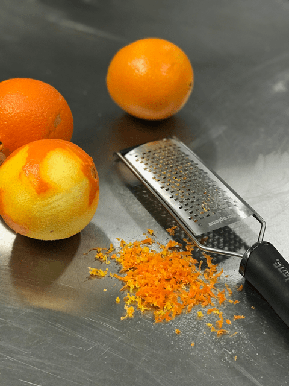
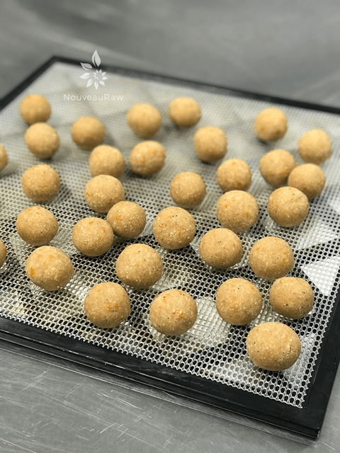

Orange Spiced Meltaways

~ raw, vegan, gluten-free ~
Nutrients in oranges are plentiful and diverse. We all know oranges for their vitamin C content, that the fruit is low in calories, contains no saturated fats or cholesterol, but they are also rich in pectin!
Pectin, by its action as a bulk laxative, helps to protect the mucous membrane of the colon by decreasing its exposure time to toxic substances as well as by binding to cancer-causing chemicals in the colon.
Pectin has also been shown to reduce blood cholesterol levels by decreasing its re-absorption in the colon by binding to bile acids in the colon. I learn something new every day. And all in the name of Orange Spiced Meltaways!
I absolutely love these little gems. The aroma of orange before it even reaches your lips is enough to toxify me. Each bite just melts in your mouth and the citrus florals linger on your tongue… be right back, I buckle to the temptation of my words, I need one NOW!
Ok back, where was I… As I have stressed in many of my recipes, the quality of your ingredients will make or break the outcome. So make sure that the oranges are ripe and sweet because that is the star of the show here.
So, I learned a silly technique to share with you while making these balls. Do you ever struggle with making perfectly round ball shapes? If so, I figured out a trick. If you roll the dough in the palm of both of your hands, moving them in opposite directions, you end up with an egg-shaped ball. So here’s the scoop… (this will depend on if you are left or right-handed, so adjust as needed) I am left-handed. Pin your right arm to your side, bend your arm at the elbow (anywhere else is painful lol) to a 45-degree angle, with your palm facing the sky. Place the dough in your palm, cover with your left hand and move your LEFT hand only in a counterclockwise direction. Keep that other arm still. You will end up with a perfect ball.
You heard it here first folks! I just might patent that move. haha It’s time for me to go clean up all the dishes that I created in this process and it’s your turn to go dirty some as you try this recipe! Enjoy and many blessings.
Yields 35 cookies
Dry Ingredients:
- 1 1/2 cups (180 g) fine almond flour or raw almond flour
- 1 1/2 cups (160 g) dried shredded coconut, unsweetened, powdered
- 1/4 cup (30 g) raw coconut flour
- 1 1/2 tsp (3 g) ground Ceylon cinnamon
- 1/2 tsp (2 g) ground ginger
- 1/4 tsp (1 g) ground clove
- 1/4 tsp (1 g) ground black pepper
- 1/4 tsp (2 g) Himalayan pink salt
Wet Ingredients:
- 6 Tbsp (100 g) raw agave nectar or maple syrup
- 10 drop liquid stevia
- 1/3 cup (77 g) fresh orange juice
- 2 tsp (5 g) vanilla extract
- 2 Tbsp (2 g) orange zest
- 1/4 cup (50 g) melted coconut oil
Optional ~ Decorating with Chocolate Ingredients:
Preparation:
- In the food processor fitted with the “S” blade, combine the flour, coconut, coconut flour, cinnamon, ginger, clove, black pepper, and salt. Process long enough to ensure that all the spices are well mixed.
- Pulsing all the dry ingredients together in the food processor helps to evenly distribute it so you don’t end up with surprise bits of clove clumps.
- I used very fine almond flour. If you use ground up almonds, these cookies won’t be quite as smooth when it comes to mouthfeel.
- Don’t forget to powder the dried shredded coconut. You can use any type of small grinder such as a coffee grinder or Magic Bullet.
- Add the sweeteners, orange juice, vanilla, orange zest, and coconut oil. Process until well combined.
- The dough will appear to be moist but crumbly, It should hold shape when pressed into a ball shape.
- Taste test your oranges before using them in the recipe, they should be ripe and sweet.
- Be sure to zest the orange before juicing it.
- When you are zesting the orange (or any citrus fruit in the future) use a gentle hand when doing so. You don’t want to press too hard and zest the white part of the rind. That part is bitter and can change the flavor profile in the end. So with a light hand, make one pass over the grater, rotate, and keep going all around the orange.
- To shape the cookies, I used my 2 tsp cookie scoop.
- Place the dough in the palm of your hands and roll it into a ball shape.
Dehydrator or oven option:
- Place cookies on the mesh sheet that comes with the dehydrator, setting the temp at 145 degrees. Dry for 1 hour. This step is to only create a firmer outside and to warm them for eating (if desired, not required).
- OR – Place cookies in an oven set to the “warm” setting, with the oven door cracked open, for about an hour. You are looking for your cookies to be dry on the outside, but still moist on the inside. Once cookies have cooled, place them in the fridge to chill and set before serving.
No dehydration option:
- Place cookies in the refrigerator for an hour to chill and set before serving. This will result in a soft, moist cookie, almost more like a cookie dough ball.
- Cookies with last, well-wrapped, in the refrigerator for up to 4 days. Or they can be stored in the freezer to extend that.
Chocolate coating or drizzle:
- This step is optional but recommended. You can either dip each ball into the melted chocolate or drizzle it over the top.
-

-
Just a reminder to zest before you juice!
-

-
The balls go in and come out of the dehydrator looking the same :)
© AmieSue.com